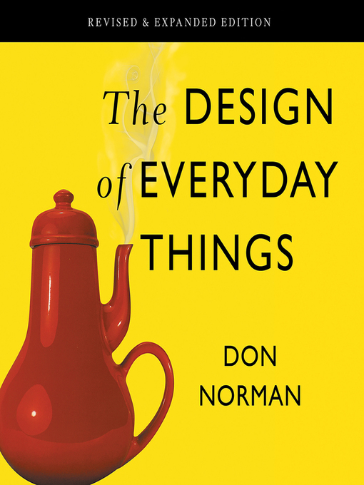
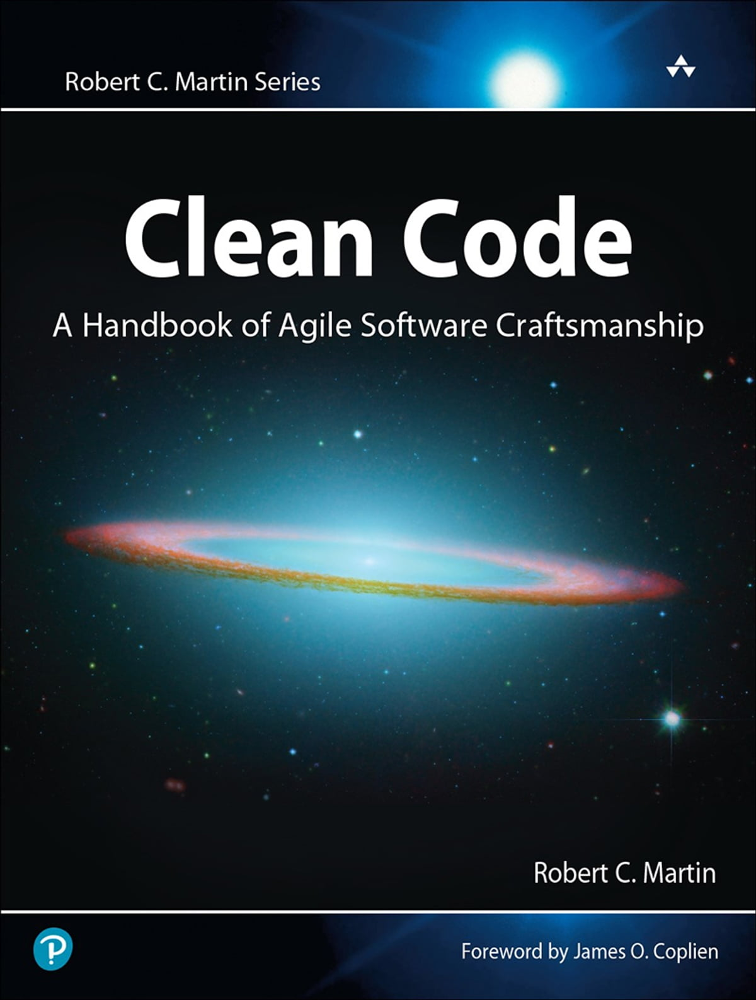
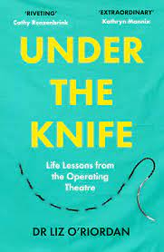

|
In The Midnight Library, Matt Haig combines subjects I love in books: life and death concerns, regrets, love, complicated relationships, family... and, of course, there's a library! I really like how Haig achieves to write what I consider being self-help books with magic and a good storyline. |

After reading this you will never look at any man-made object the same. You will question everything from doors to tea kettles to the most sophisticated computer program. The next time you fumble with an answering machine, web page, or light switch you will think back to the lessons from this book. It is almost liberating once you can see beyond the design of everyday things. |

If every developer read this with an open mind, took notes, and implemented even a few of the disciplines, we would all be better off. Clean code is incredibly hard to come by which is a shame because that just indicates how unprofessional the software industry really is. This stuff isn't hard, it just requires you to have the discipline to spend a few extra minutes writing a second or third draft of your code with a few things in mind. We need more developers to give a shit about things like this so that the codebases we work on can be more maintainable, readable, testable, and flexible. |
|
I had trouble putting this book down once I started and there’s something anyone can learn from this book about addiction crisis. As we live in a era of overconsumption and instant gratification, this book explains the personal and societal price of being ruled by the next fix and how to manage it. |
Arthur Conan Doyle first introduced Sherlock Holmes in this book. He created a world-famous character that people read even in the 21st century. There is a total of four parts in the series. This book grabbed my interest, it is definitely a must read. |

Not only does this book describe the technicalities of each surgery, but Arnold van de Laar uses recognizable historical moments (e.g. JKF's assassination, the death of Harry Houdini) to illustrate their cultural importance as well as their significance in the medical field. I learned so much reading this book, and I definitely want a physical copy for my shelves. |